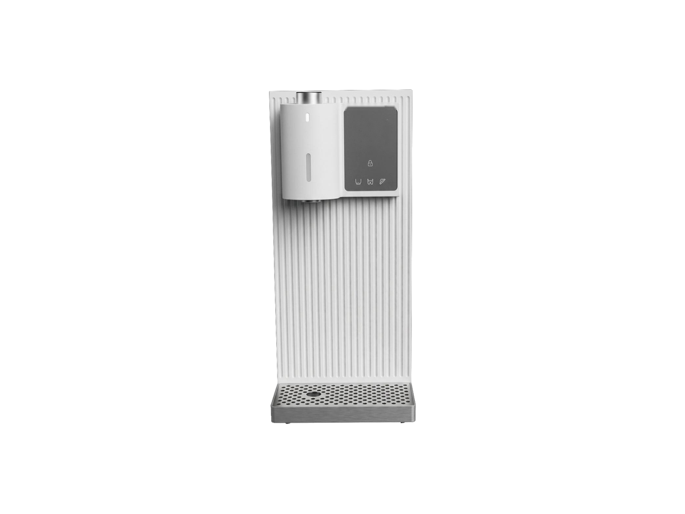

Countertop
CountertopRP-C07
RO purifier with heating jug
SKU: RP-C07
MOQ: Confirm on enquiry
Home / Products / Countertop Systems / RP-C01

Countertop Systems
Instant-heating RO — three variants. RP-C01 (heating jug) leads the series.
RP-C01 and RP-C02 are two configurations of the same instant-heating RO and share the specification values below. They differ only in the right-side module: RP-C01 has a cylindrical heating jug; RP-C02 has a taller transparent electronic-cooling tank that adds 15 °C cold water and is 40 mm wider (380 × 210 × 390 mm). A third, compact pure-hot variant joins the same family, with smaller tanks (4.5 / 1 L) and a narrower body (340 × 170 × 385 mm); see the variant comparison below for its full specifications. Specifications are confirmed per model and order.
Voltage / frequency is configurable to the target country. Other configurations are confirmed per order.
Three variants — quote as RP-C01 and specify the variant (heating jug, electronic cooling, or compact pure-hot).
Hover over a variant image to see its specifications. On touch screens, tap an image.


Full specifications for each variant, side by side. The specification table further down shows RP-C01's values.
| Specification | RP-C01-1 — heating jug (AM910R) | RP-C01-2 — electronic cooling (AM915R) | RP-C01-3 — compact pure-hot variant (AM604R) |
|---|---|---|---|
| RO capacity | 75 / 100 GPD; ≥0.19 / 0.26 L/min | 75 / 100 GPD | 75 / 100 GPD; ≥0.19 / 0.26 L/min |
| Raw / pure-water tanks | 5.5 / 1.2 L | 5.5 / 1.2 L | 4.5 / 1 L |
| Filtration | Five-in-one RO with mineral stage | Five-in-one RO with mineral stage | Five-in-one composite filter |
| Rated purified volume | 4000 L | 4000 L | Confirmed per order |
| Dimensions | 340 × 210 × 390 mm | 380 × 210 × 390 mm | 340 × 170 × 385 mm |
| Temperatures | 25 / 45 / 65 / 85 / 100°C | 15 / 25 / 45 / 65 / 85 / 100°C | 25 / 45 / 65 / 85 / 100°C |
| Volumes | 150 / 300 / 500 mL / continuous | 150 / 300 / 500 mL / continuous | 150 / 300 / 500 mL / unlimited |
| Voltage / frequency | Configurable to target country | Configurable to target country | 220V / 50Hz |
9 specification rows from the ROPureOEM catalogue.
| RO capacity / production | 75 / 100 GPD; ≥0.19 / 0.26 L/min |
|---|---|
| Raw / pure-water tanks | 5.5 / 1.2 L |
| Filtration | Five-in-one RO with mineral stage |
| Rated purified volume | 4000 L |
| Dimensions | 340 × 210 × 390 mm |
| Temperatures | 25 / 45 / 65 / 85 / 100°C |
| Volumes | 150 / 300 / 500 mL / continuous |
| Voltage / frequency | Configurable to target country |
| Other configurations | Confirmed per order |
Specifications are taken from the ROPureOEM catalogue. Where a value is not yet confirmed, it is listed as “Confirmed per order” — we do not publish unconfirmed figures.
CountertopRO purifier with heating jug
SKU: RP-C07
MOQ: Confirm on enquiry
 Countertop
CountertopAll-in-one cartridge countertop purifier
SKU: RP-C08
MOQ: Confirm on enquiry
 Countertop
CountertopRO purifier with ice, hot and cold water
SKU: RP-C09
MOQ: Confirm on enquiry
 Countertop
CountertopCountertop RO with compressor cooling
SKU: RP-C10
MOQ: Confirm on enquiry